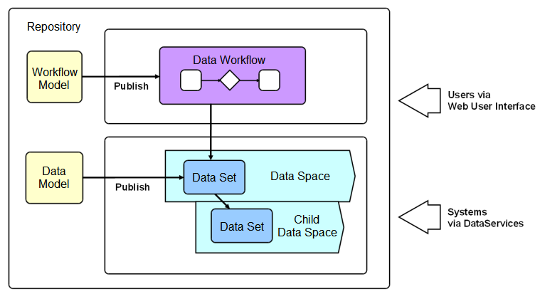

How EBX5 works
Section contents
Product overview
Master Data Management (MDM) is a way to model, manage and ultimately govern shared data. When data needs to be shared by various IT systems, as well as different business teams, having a single governed version of master data is crucial.
With EBX5, business and IT users can collaborate on a single, unified solution in order to design data models and manage master data content.
EBX5 is MDM software that allows modeling any type of master data and applying governance using the rich features included, such as collaborative workflows, data authoring, hierarchy management, version control, and role-based security.
An MDM project using EBX5 starts with the creation of a data model. This is where the definition of tables, fields, links and business rules related to the master data takes place. Examples of modeled data include product catalogs, financial hierarchies, supplier lists or simple reference tables.
The data model can then be published to make it available to data sets, which store the actual master data based on the structure defined in the data model. Data sets are organized and contained within data spaces, containers that isolate updates from one another. Data spaces allow working on parallel versions of data without the modifications impacting across versions.
Workflows are an invaluable feature for performing controlled change management or data approvals. They provide the ability to model a step-by-step process involving multiple users, both human and automated.
Workflow models detail the tasks to be performed, as well as the parties associated with the tasks. Once a workflow model is published, it can then be executed as data workflows. Data workflows are able to notify users of relevant events and outstanding work in a collaborative context.
Data services help integrate EBX5 with third-party systems (middleware), by allowing external systems to access data in the repository, or to manage data spaces and workflows through web services.

 User guide table of contents
User guide table of contents